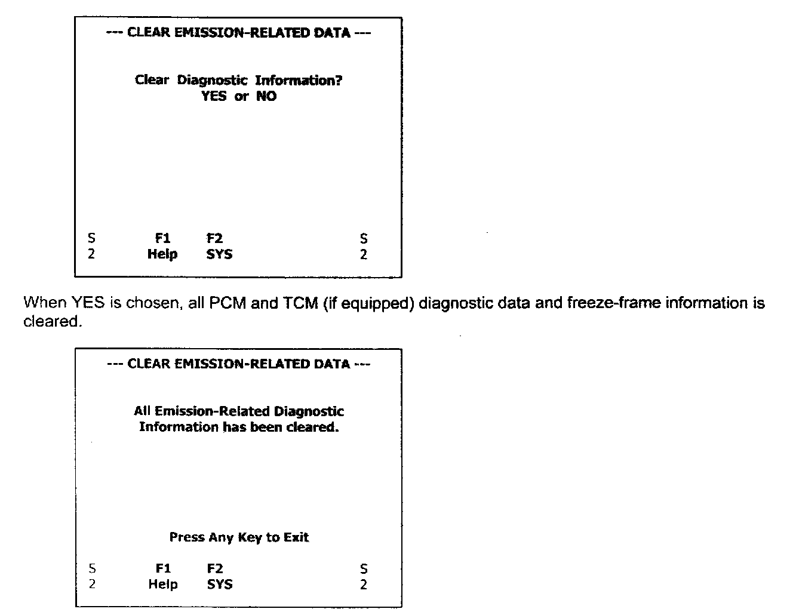

4. Clear/Reset DTCs

MODE 4 - Clean Reset Emission-Related Diagnostic Information
Functional Description - The purpose of this test mode is to provide a means to command on-board modules to clear all emission-related diagnostic information. This includes the following:
a. Clear number of diagnostic trouble codes (Mode 1)
b. Clear diagnostic trouble codes (Mode 3)
c. Clear trouble code for freeze frame data (Mode 1)
d. Clear freeze frame data (Mode 2)
e. Clear oxygen sensor test data (Mode 5)
f. Reset status of system monitoring tests (Mode 1)
g. Clear on-board monitoring test results (Mode 6 and Mode 7)
h. Clear odometer mileage counter for accumulated distance traveled with MIL "ON" (Mode 1)
Since CARB allows other manufacturer-specific "cleaning/resetting" actions to occur in response to this request, the Chrysler Group has elected to impose additional requirements to dear ALL diagnostic information regardless of emission-related impact to facilitate ease of implementation.